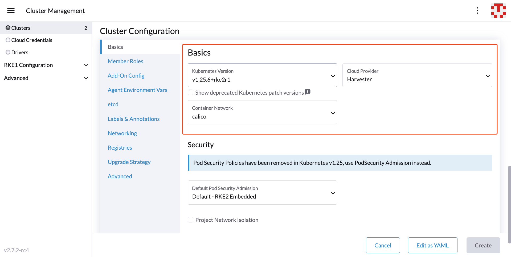

Harvester Node Driver
The Harvester node driver, similar to the Docker Machine driver, is used to provision VMs in the Harvester cluster, and Rancher uses it to launch and manage Kubernetes clusters.
One benefit of installing Kubernetes on node pools hosted by the node driver is that if a node loses connectivity with the cluster, Rancher can automatically create another node to join the cluster to ensure that the count of the node pool is as expected. Additionally, the Harvester node driver is integrated with the Harvester cloud provider by default, providing built-in load balancer support as well as storage passthrough from the bare-metal cluster to the guest Kubernetes clusters to gain native storage performance.
In this section, you’ll learn how to configure Rancher to use the Harvester node driver to launch and manage Kubernetes clusters.
|
The Harvester node driver only supports cloud images. This is because ISO images usually require additional setup that interferes with a clean deployment (without requiring user intervention), and they are not typically used in cloud environments. |
Harvester node driver
Starting from Rancher v2.6.3, the Harvester node driver is enabled by default. You can go to the Cluster Management > Drivers > Node Drivers page to check the Harvester node driver status.
When the Harvester node driver is enabled, you can create Kubernetes clusters on top of the Harvester cluster and manage them from Rancher.
|
Known Issues
Rancher loses the ability to manage or scale guest clusters when the corresponding API tokens expire
Issue: #5827
Description: Rancher uses kubeconfigs with embedded authentication tokens to provision guest Kubernetes clusters on Harvester. When these tokens expire, Rancher loses the ability to perform management operations for the corresponding Rancher-managed guest Kubernetes cluster. This issue affects only guest Kubernetes clusters running on Harvester and using cloud credentials created after installing or upgrading to Rancher v2.8.x, which reduced the kubeconfig-default-token-ttl-minutes setting as well as the auth-token-max-ttl-minutes setting to 30 days and 90 days respectively.
Status: A temporary workaround is available.
Last updated: 2024-05-21
RKE1 Kubernetes cluster
Click to learn how to create RKE1 Kubernetes Clusters.
RKE2 Kubernetes cluster
Click to learn how to create RKE2 Kubernetes Clusters.
K3s Kubernetes cluster
Click to learn how to create k3s Kubernetes Clusters.
Topology spread constraints
Within your guest Kubernetes cluster, you can use topology spread constraints to manage how workloads are distributed across nodes, accounting for factors such as failure domains like regions and zones. This helps achieve high availability and efficient resource utilization of the Harvester cluster resources.
For RKE2 versions before v1.25.x, the minimum required versions to support the topology label sync feature are as follows:
| Minimum Required RKE2 Version |
|---|
>= v1.24.3+rke2r1 |
>= v1.23.9+rke2r1 |
>= v1.22.12+rke2r1 |
Furthermore, for custom installation, the Harvester cloud provider version should be >= v0.1.4.
Sync topology labels to the guest cluster node
During the cluster installation, the Harvester node driver will automatically help synchronize topology labels from VM nodes to guest cluster nodes. Currently, only region and zone topology labels are supported.
-
Configure topology labels on the Harvester nodes on the Hosts > Edit Config > Labels page. For example, add the topology labels as follows:
topology.kubernetes.io/region: us-east-1 topology.kubernetes.io/zone: us-east-1a
-
Create a downstream RKE2 cluster using the Harvester node driver with Harvester cloud provider enabled. We recommend adding the node affinity rules, which prevents nodes from drifting to other zones after VM rebuilding.
 -
After the cluster is ready, confirm that those topology labels are successfully synchronized to the nodes on the guest Kubernetes cluster.
-
Now deploy workloads on your guest Kubernetes cluster, and you should be able to manage them using the topology spread constraints.
|
For Harvester cloud provider >= v0.2.0, topology labels on the Harvester node will be automatically resynchronized when a VM (corresponding to the guest node) undergoes migration or update. For Harvester cloud provider < v0.2.0, label synchronization will only occur during the initialization of guest nodes. To prevent nodes from drifting to different regions or zones, we recommend adding node affinity rules during cluster provisioning. This will allow you to schedule VMs in the same zone even after rebuilding. |